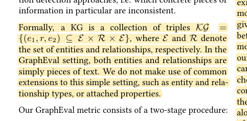
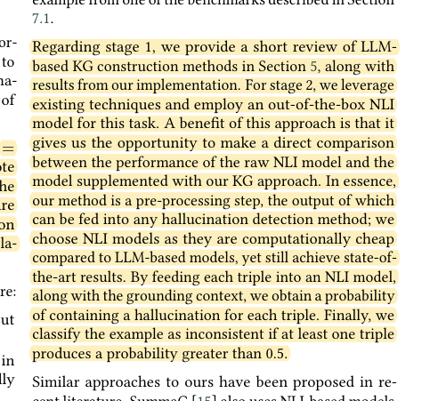
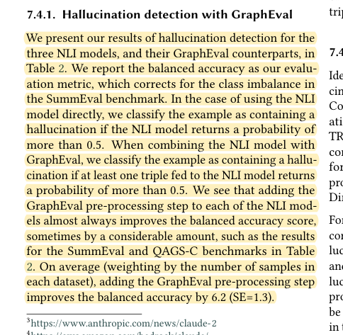

R09 · Rule and evidence algorithms
GraphEval makes inconsistencies easier to locate by checking atomic claims
GraphEval: A Knowledge-Graph Based LLM Hallucination Evaluation Framework
Hannah Sansford, Nicholas Richardson, Hermina Petric Maretic, Juba Nait Saada · 2024
arXiv:2407.10793; knowledge-enhanced language models workshop paper
What the study investigates
Long responses can mix correct and incorrect facts. A single whole-response consistency decision provides little information about where an error occurred.
How it was studied
An LLM first converts the response into triples. Each triple is checked against the source context through natural language inference (NLI); a response is flagged when a triple exceeds the inconsistency threshold. Incorrect triples can also guide targeted correction. Evaluation uses the SummEval, QAGS-C, and QAGS-X summarization-consistency datasets.
Findings
Triple preprocessing improves the dataset-size-weighted mean balanced accuracy by 6.2 percentage points. Gains are small for shorter texts containing fewer facts. The paper explicitly states that it does not use entity types, extended relation types, or additional attributes.
Limits of the evidence
Consistency with context is not equivalent to completing a learner skill. NLI's neutral category indicates insufficient entailment, rather than a student error. Graph extraction itself can lose information.
How it informs DualGraph-OSCE
DualGraph-OSCE draws on atomic-claim verification but retains the speaker, negation, adoption status, drug–dose binding, and source-span pointer. Extracting “methotrexate—frequency—daily” while dropping “not” can turn a correct self-correction into an apparent critical error. Such minimal pairs belong in a separate diagnostic analysis.
Where to cite it
Method: semantic extraction and leaf-level checking. Evaluation: negation, attribution, and incorrect binding tests.
Possible manuscript wording
GraphEval shows that decomposing generated text into atomic facts helps locate inconsistencies. DualGraph-OSCE retains the source, polarity, and regimen attributes needed to interpret pharmacy actions.
[R09·1]This is a manuscript-specific paraphrase, not a quotation from the source. The excerpts below define what the citation supports. The proposed method and its expected benefits are not findings of the cited paper.
Source passages and precise locations
Page numbers refer to physical pages in the saved original PDF, including any repository cover sheets. Compilation page numbers are listed separately. Yellow highlighting marks the passage used for the argument.
R09-E1How triples are represented, including the absence of attributes
Original PDF page 3. Highlight compilation page 115. The highlight identifies the passage used here; consult the full original page for its context.

R09-E2Triple-level NLI checking
Original PDF page 3. Highlight compilation page 115. The highlight identifies the passage used here; consult the full original page for its context.

R09-E3Main results and the boundary for short texts
Original PDF page 6. Highlight compilation page 118. The highlight identifies the passage used here; consult the full original page for its context.
